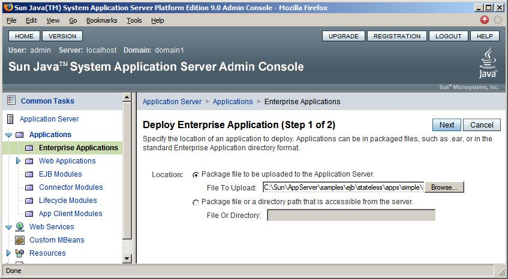
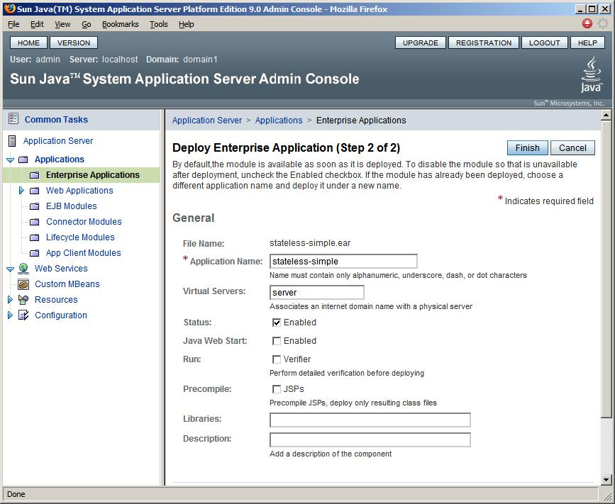
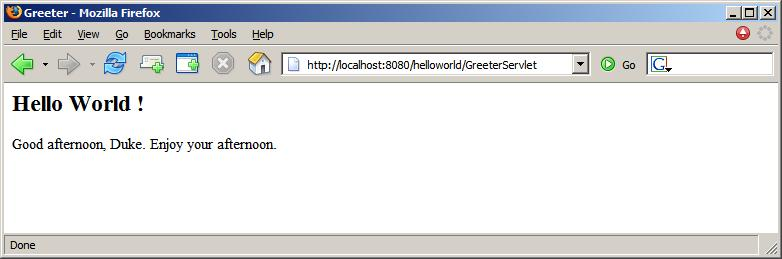
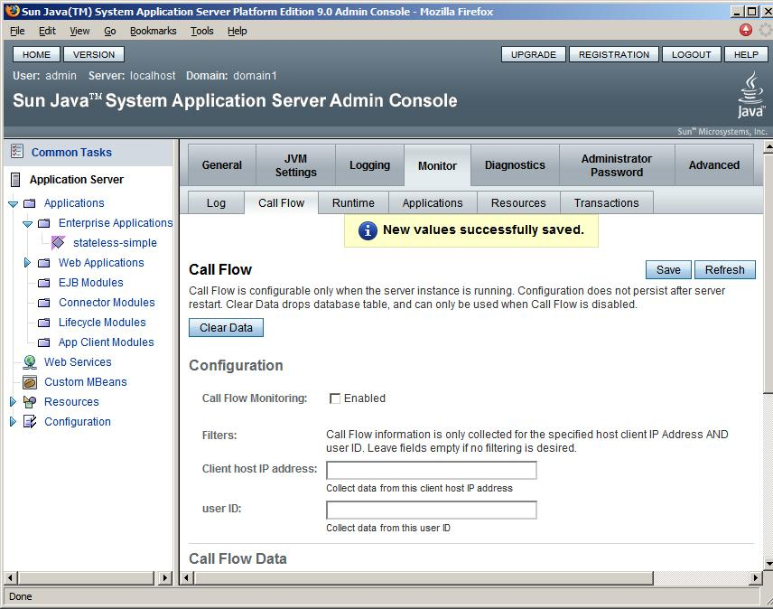
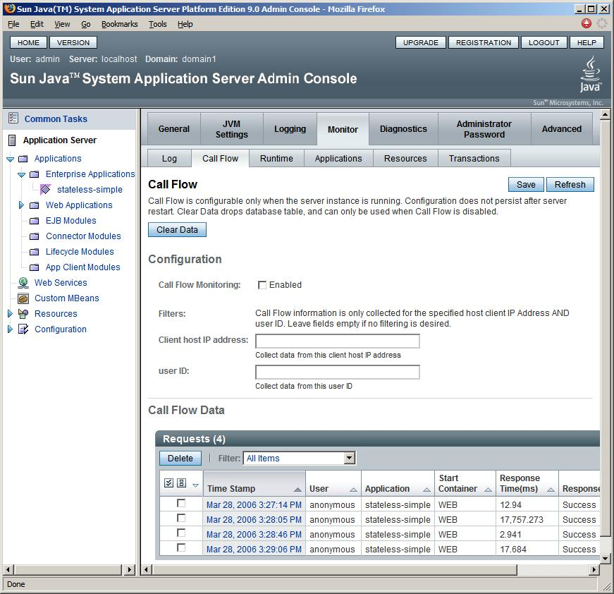
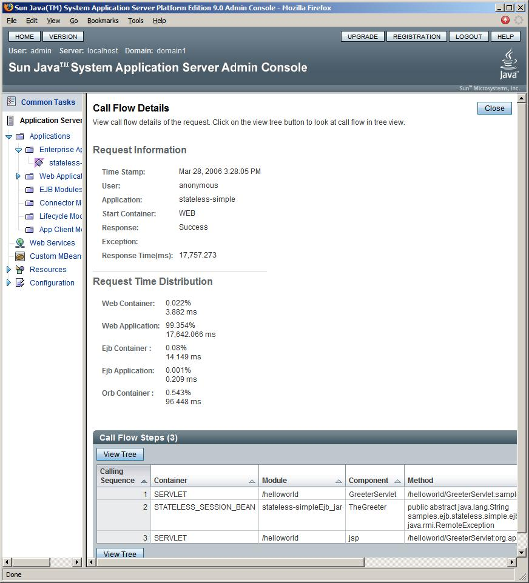
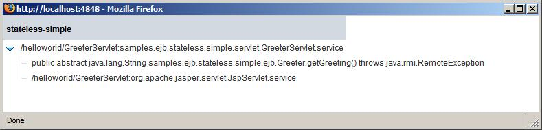
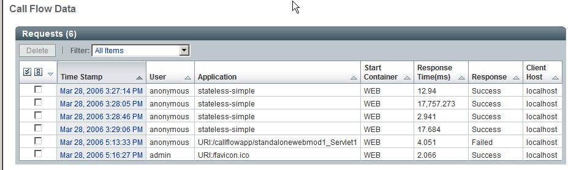
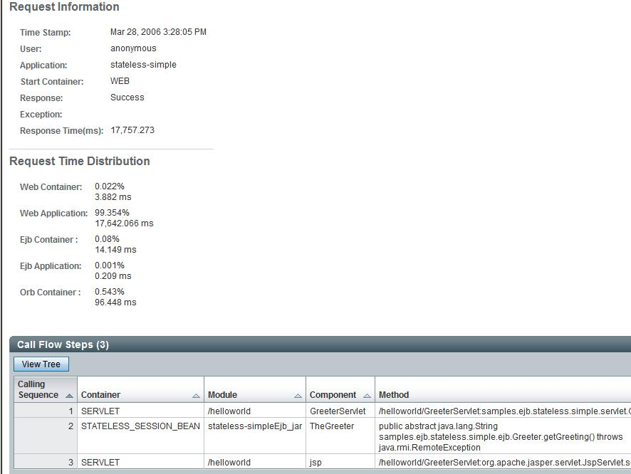
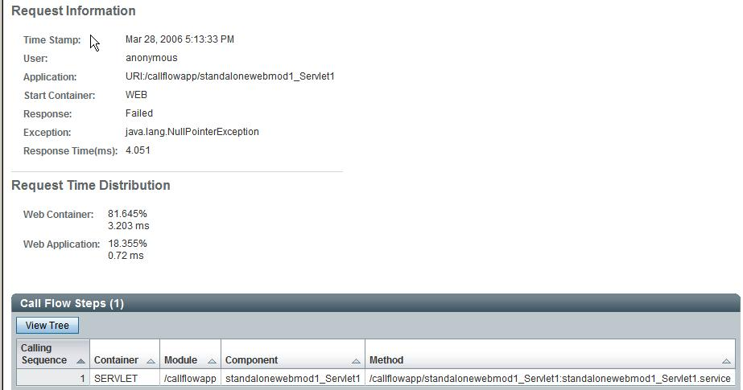

CallFlow collects runtime information about an application, like the user principal, transaction id, application name, method name, exceptions, time spent in various containers and time spent in application code. Call is monitored as it flows through various containers in the application server and through the user application code. For e.g: Consider a servlet that calls an ejb (method foo). In this particular scenario, CallFlow framework will monitor the request as it enters the web container, servlet.service method, ejb container and finally ejb method foo. The collected information is written to a persistent store.
Once information is collected, a user turns off CallFlow monitoring.
The user can look at the mined data about requests hitting the
application. A user can look at a particular request to drill down to
get
more information like the call stack and time spent in various
containers
as well as the application code.
After the server has started up, you can access the Admin Console by
entering this URL :
http://localhost:4848
* localhost is used if the both the browser and the Application Server are running on the same system. If the Application Server is running on another system, substitute the name of that system in the URL.
* 4848 is the Admin Console's default port number. If you are not sure about the port number, you can also refer to the messages given out by the asadmin start-domain command when starting up the server.
After you logged into the Admin Console, you can then configure the server to enable call flow monitoring and/or look at the datas collected.
1. In the tree component, select the Application Server
node.
2. Click the Monitor tab.
3. Click the Call Flow tab. The Call Flow
configuration
page displays.
4. Select Enabled to initiate call flow monitoring for
the server.
5. Specify the client host IP address and user ID for
which you want to enable monitoring.
You can specify either the client host
IP address or the user's ID. Specify both IP address and user ID to
filter
for an exact match of user ID and IP address.
6. Click Save
Note that you have to turn on call flow monitoring every time you
start
the server. This value does not persist upon server re-start.
To Turn off Call Flow Monitoring, Deselect the Enabled
check box.
4.1 Deploy the sample application
- In the left pane, click the Applications node to expand it.
- Click Enterprise Applications.
- On the Enterprise Applications page, click Deploy.
- Select the Package file to be uploaded to the Application Server option and click Browse.
- Navigate to the <install-dir>/samples/ejb/stateless/apps/simple directory or the directory where you have downloaded the ear file, and select stateless-simple.ear
- Click Next.

- On Deploy Enterprise Application (Step 2 of 2) page, accept all the defaults, and click Finish.

4.2. Turn on CallFlow.
Refer to Section 3.1 on how to turn on call flow using Admin Console
4.3. Run the application
Now that the application has been deployed, we can run it by entering the following URL in another browser window.
http://localhost:8080/helloworld

4.4. Turn off CallFlow using Admin GUI
After executing the application and the call flow data has been collected, you can turn off call flow monitoring by following these steps:
1. In the tree component, select the Application Server node.
2. Click the Monitor tab.
3. Click the Call Flow tab. The Call Flow configuration page displays.
4. De-Select Enabled checkbox to turn off call flow monitoring for the server.
5. Click Save.

The table shows all the requests that have been sent to the server.
If you want to delete any particular request, select the check
box
of that row, and Click the Delete button. This will remove
the data permanently.
There is a drop down box that allows you to Filter the request.
By default, it will show you all the requests. You can pull
down the list, and see that you can filter the data based on
For detail information of each request, Click on the Time Stamp column of that request, this will show you the Call Flow Detail page.

The table shows you the all the methods that has been called with
this
request, based on the calling sequence.
To see this in a hierarchical view. Click on the View Tree
button.
A window will pop up that shows each of the method in a
parent/child
hierarchy

Refer to Section 6.0 for details on how to
interpret
the call flow monitoring data.

The requests are in a chronological order and show the following
information:

The following shows the data for an application wherein there was
an exception. The request has failed due to a
"java.lang.NullPointerException". In the "Call Flow Steps" table we see
that the call did not proceed beyond the "standalonewebmod1_Servlet1",
thus pointing to us that the call failed in that particular service
method.

Callflow monitoring implementation has an intimate relationship with the container, and so it is able to collect information such as application name, module name, component name, component type, transaction id, security principal, et cetera. Such information is not readily available to a profiler.
Callflow monitoring implementation collects the call flow data and stores them in a database. In a future release, this raw data may be accessed by third-party data mining tools, in order to slice and dice the data in infinite ways to project useful information in the form of graphs, pick up trends, et cetera.
Callflow monitoring provides the ability to monitor calls that originate specifically from a remote client and a user id. This allows selective monitoring of requests, without unnecessarily intruding into other parts of the runtime system. This is very useful while running large scale application services such as internet sites that support thousands of concurrent client.
Use CallFlow monitoring during production time to look at unexpected
behaviour and catch problematic applications. For e.g: say a request is
failing, you can drill down into the request and see the exception that
particular request fails with, identify the user making the request etc.
CallFlow framework is currently being used by the Application Server
Self Management code to receive events that trigger self-management
rules. It is also being used by the Application Verification Kit to
verify that applications conform to Java EE apis.
CallFlow is a tool that can make your development and debugging easier.
For more information head to the CallFlow
homepage.